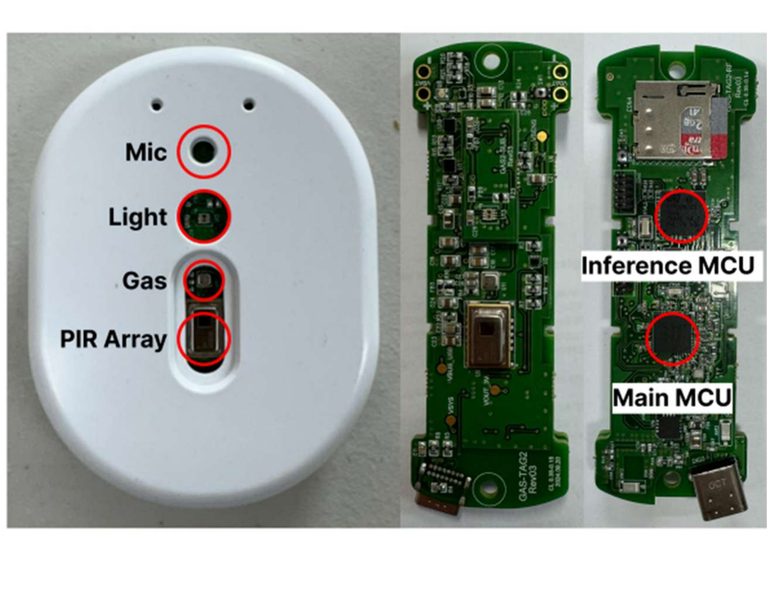

CSOS 자율군집 소프트웨어 연구센터
- 경북대학교 부설 연구소입니다. 2011년 지식경제부 차세대소프트웨어플랫폼 사업 공모에서 전국 24개 대학 중 1순위로 선정되어 설립되었습니다.
- IoT 단말에 자연계의 군집지능 개념을 도입한 자율군집 사물지능을 연구합니다 (정의와 특징은 연구 > 자율군집 사물지능 참고).
- 중앙 서버나 게이트웨이 없이 단말들이 스스로 군집을 이루어 직접 또는 환경을 통해 간접 통신하는 군집형 IoT 단말에 특화된 연구센터입니다. 이에 필요한 통신 스택, 운영체제, 상황인지, 센서 및 액추에이터 연동 등의 시스템 소프트웨어를 자체 구현합니다.
- 시스템 반도체 (SoC, NPU) 부터 실시간 운영체제 (Ubinos RTOS), 군집 미들웨어 (SAAL), 온디바이스 AI, 단말 하드웨어, 실증 및 운영까지 자체 기술 체계를 갖춘 풀스택 플랫폼을 보유하고 있습니다.
주요 성과 수치
- 20편SCI급 논문
- 6건국내 특허 등록
- 19건기술이전
- 35.9억원상용화 매출
2024-03 ~ 2026-02 합계 / 누적: 지적재산권 80여 건 활용 및 기술이전 총 19 건, 상용화 매출 35.9억원 · 성과 더 보기
연구
5대 핵심 원천기술
센터가 오랫동안 개발해 온 기술 가운데 다음 다섯 가지가 핵심 원천기술이자 미래 원천기술 후보입니다.
- 01
비침습식 ADL 실시간 감지기술
행동을 직접 탐지하지 않고 환경 센서, 노이즈 사운드 등 간접 데이터로 일상생활과 행동을 탐지합니다.
- 02
무설정 IoT 단말간 자율군집 기술
가정 내 다수 센서 (DEAN) 와 기기 (PAAR band, 스마트폰) 가 스스로 네트워크를 구성하고 협력합니다.
- 03
초저전력 On-device AI
상시 전원 없이 배터리만으로 AI 추론을 하는 기술입니다.
- 04
실시간 Closed-loop intervention
SlimHub 에 내장된 기술입니다.
- 05
거주자 특화형 ADL 및 재활 표준화
DEAN node, PAAR band, SlimHub, 모바일 앱에서 모은 단순 로그 데이터를 임상적으로 해석 가능한 B-ADL / I-ADL 공통 의미 단위와 디지털 바이오마커 인덱스로 표준화합니다.
플랫폼
SAAL 플랫폼
CSOS 는 자율군집 사물지능을 초기 치매와 경도인지장애 돌봄에 특화된 On-device AI 기반 SAAL (Swarm-intelligent Ambient Assisted Living) 플랫폼으로 구현했습니다. 하나의 기기가 모든 정보를 모으는 대신, 착용형, 이동형, 고정형 단말이 생활공간 안에서 자율적으로 연결되어 위치, 행동, 생체신호, 생활 패턴을 함께 해석합니다.
DEAN node (ADL 감지기, Digital Ear And Nose, DE&N 노드)
단위공간 (침실, 부엌, 화장실, 거실 등) 천장에 붙이는 고정형 엣지 단말로, 초저전력 On-device AI 로 ADL 을 인지해 SlimHub 에 알립니다.
PAAR band (옛 이름 SAALWear)
착용형 단말 (생체정보 측정형 스마트밴드) 로, 심박수, 심박변이도, 산소포화도, 수면, 활동량, 보행 특성을 반복 측정해 개인별 기준선을 만들고, 자세변화, 낙상, 외출, 보행, 재활 수행도를 해석합니다.
SlimHub (AI형 홈허브, SLiM Hub, 가정용 홈서버)
한 집의 DEAN node, PAAR band 와 별도 설정 없이 스스로 통신해 데이터를 모으고 필요할 때 클라우드 서버로 보내는 게이트웨이입니다.
스마트폰 앱
거주자가 SlimHub 에 저장된 행동내역과 ADL 정보를 실시간으로 보고, 보호자, 담당 치료사와 정보를 연동해 생활보조, 재활 권고, 상담을 받는 사용자 접점입니다.

연구
DEAN 노드 기반 ADL 실시간 수집 및 분석
DEAN 노드 (Digital Ear and Nose node, DE&N 노드) 는 귀 (노이즈 마이크) 와 코 (공기질, 환경 센서) 로 단위공간의 생활을 듣고 맡아, 카메라나 웨어러블 없이 거주자의 일상생활 수행 (ADL, Activities of Daily Living) 을 실시간으로 인지합니다.
- 센서: 2차원 적외선 센서 (PIR Array), 노이즈 마이크, 온습도, 공기질 분석 센서 (Gas), 조도 센서 (Light)
- 인지 대상: 출입, 체류, 생활 행동 (ADL) 과 단위공간 이동 속도, 거리, 이동 횟수, 체류 시간. 결과는 SlimHub 에 알립니다.